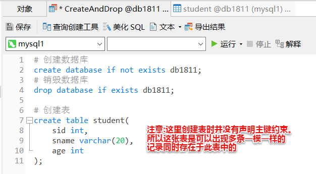
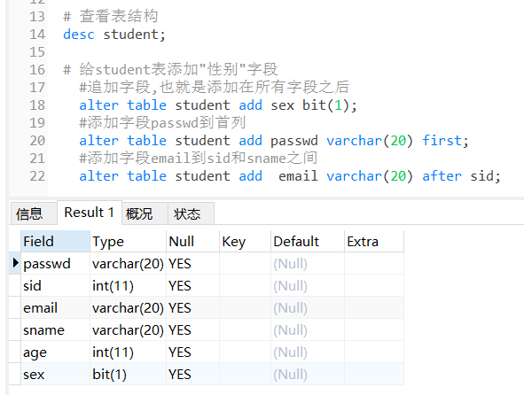

1.sql简介与分类
1.sql
结构化查询语言,关系型数据库通用语言。
不区分大小写
一句完整的SQL语句的结束标识是";" (注意在这句完整的SQL语句中间不能再出现分号,否则会变成两句或者报错)
sql也表示脚本(aaa.sql),这是可以被MySQL直接识别的文件
2.sql分类:
DDL：数据定义语言(对数据库对象(数据库,表,索引,视图...)结构操作)
create / alter / drop
用法:
create/alter/drop table tablename ...
alter table tname (
add 字段 字段类型 [first/after 某字段]
change 要修改的字段名 修改后的字段名 字段类型 [first/after 某字段]
modify 要修改的字段名 字段类型 [first/after 某字段]
drop 字段名
rename to 新的表名
)
DML: 数据操纵语言(数据的增删改)
insert / update / delete
用法:
insert into tablename select语句
或 insert into tablename values(列1的值,列2的值,...,列n的值), ... ,(列1的值,列2的值,...,列n的值)
(insert 要保证所有列都插入值,且列的值一一对应)
update tablename set 列名 = xxx;
delete [from后面跟的表别名] from tablenameA [as 别名][,tablenameB as 别名] where ...
DQL: 数据查询语言(数据查询)
select
TCL(transaction): 事务控制语言
commit / rollback
DCL: 数据控制语言(授权)
grant / revoke
1.DDL操作
1 数据库操作
创建数据库: create database [if not exists] dbname;
销毁数据库: drop database [if exists] dbname;
2 表操作
关系模式(二维表格)保存数据。
行叫记录;列叫字段。
1)创建表
create table tname( fname ftype 约束... )；

2)修改表
alter table tablename ....
3)销毁表
drop table tablename;
3 mysql数据类型
数值类型
整数:
int: 4个字节
浮点数: 使用是要带参数才能使用,当然好像也可以不带参数,那就是用默认参数
float(m,n): m指代总长度 n代表小数位数
double(m,n)
decimal(m,n): 金钱相关 到其他平台也不会精度丢失
字符串类型:
char(n): 定长字符串 (长度不可变,如果一个字符串长度没有这么长则会自动补充
到n个字符大小,如果超过n个字符则不能插入)
varchar(n): 可变长字符串(括号里n表示的是最长长度,超过该长度也不能插入)
日期类型:
date: 年月日
time: 时分秒
datetime: 年月日时分秒 1000 - 9999年
timestamp(时间戳): 年月日时分秒 1970-2038年
上面datetime和timestamp主要的区别是底层存储的结构的区别和范围上的区别(主要是年份上的区别)
year
其他类型:
bit(n): 表示占用n个bit位
text: 文本类型(char和varchar理论上不能超过65535个字符,而text可以保存超过65535个字符的字符串)
blob:二进制数据(图片,音频,视频...) 但一般视频之类的不会在数据库直接保存,一是读取
太慢了 二是占用储存空间太大,一般都会将视频保存在服务器里,数据库里只存该视频的路径
enum: 枚举
set：集合
json: 以字符串形式表示对象或集合,可以很方便的用来进行系统之间的对象传输
'{"name":"zs","age":12}'
4 查看表结构:
desc tname;
5 表修改(添加字段,修改字段信息,销毁字段,修改表名称):
alter table tname (add/change/modify/drop/rename)
1.字段添加
#追加字段
alter table student add sex bit(1);
#添加password字段到首列
//password之所以要加反引号是因为会和sql里有password这个关键字,所以要规避。
alter table student add `password` varchar(20) first;
#添加字段email到sid和sname之间
alter table student add email varchar(20) after sid;

2.字段修改(modify/change:类型、名称、约束、位置)
#修改字段(change/modify)
#修改sname长度为50
alter table student change sname sname varchar(50);
alter table student modify sname varchar(50);
#修改字段名称
alter table student change sname username varchar(50);
#修改字段位置
alter table student modify password varchar(20) after username;

3.字段销毁(drop)
#销毁字段
alter table stu drop email;
4.修改表名（rename to)
alter table student rename to stu;
或者: rename table student to stu;
表销毁:
drop table tname;
3.数据完整性
1.什么是数据完整性
数据的准确性和可靠性
2.数据完整性分类
1)实体完整性: 实体(记录)
约束:
1)主键约束: 唯一而且不能为空
主键约束添加:
#创建表时添加主键约束
create table student(
sid int primary key,
sname varchar(20),
birthday date
);
或者
create table student(
sid int,
sname varchar(20),
birthday date,
primary key(sid)
);
#在创建表之后添加
#先创建表
create table student(
sid int,
sname varchar(20),
birthday date
);
#添加主键约束
alter table student add constraint PK_SID primary key(sid); (其中约束名PK_SID可省略)
说明(表设计时):
1.每张表必须有主键
2.每张表有且只有一个主键,但是可以有联合主键。
3.主键字段要求:
1.主键字段客观唯一
2.主键不要选择业务字段(比如身份证号),容易影响增删改查的效果;要选择无实际意义字段(如学号),主键只是用来区分记录
2)唯一约束: 唯一(unique) 允许为空
比如说身份证号字段card,虽然它不是主键,但我们也不希望它会出现取相同值的情况

#可以在创建表的同时添加
create table student(
sid int primary key,
sname varchar(20),
birthday date,
card varchar(18) unique
);
或者
create table student(
sid int primary key,
sname varchar(20),
birthday date,
card varchar(18),
unique (card)
);
#也可以在 创建表后添加
alter table student add constraint UQ_CARD unique(card); (其中约束名UQ_CARD可省略)
#还可以通过添加唯一索引的方式来添加唯一约束
表设计说明:
1.可以有多个唯一约束
2.添加唯一约束相当于添加了一个唯一索引(unique index),唯一索引是索引的一种
3)主键自增: 关键字为auto_increment 默认从1开始,每次增加1 (注意, 在mysql里自增只能是主键自增)
1.创建表主键自增
create table student(
sid int primary key auto_increment,
sname varchar(20),
birthday date
);
2.创建表时没设置主键自增, 用modify修改为主键自增(不同于主键约束和唯一约束,自增就不能用add添加了)(只有主键约束、外键约束、唯一约束可以用add添加约束吗?其他都是modify?)
alter table student modify sid int primary key auto_increment;
如果sid已经是主键, 则可以改为:
alter table student modify sid int auto_increment;
2)域完整性: 域(字段)
约束:
1.类型约束
2.非空约束 not null
(1)创建表字段后添加not null
create table student(
sid int primary key,
sname varchar(20) not null,
birthday date,
card varchar(18) unique
);
(2)modify修改字段约束(不同于主键约束和唯一约束,not null就不能用add添加了)
3.默认值 (default 值)
create table student(
sid int primary key,
sname varchar(20),
birthday date,
sex bit(1) default 1
);
3)引用(参照)完整性:保证某个表引用其他表时数据应该是完整可靠的,不能凭空多出来内容
外键约束: foreign key
1.创建表时添加外键约束(同主键添加第二种方式) ,即
create table student(
sid int primary key,
cid int,
sname varchar(20),
birthday date,
foreign key(cid) references classroom(cid)
);
2.创建表后添加外键约束
alter table student add constraint FK_CID foreign key(cid) references classroom(cid);
说明:
1.一般一张表外键关联另一张表主键。
2.外键字段名称和另一张表主键名称可以不一致,但是类型必须一致。
3.删除被引用表里的记录时,如果该记录未被引用,可以删除,如果已经被引用,是直接删除不掉的,除非级联删除
4)删除约束
alter table student drop primary key PK_SID;
alter table student drop foreign key FK_CID ;
删除唯一约束（和删除其他约束不同）:
drop unique index index_name on tname;
3.运算符
#运算符
#select 字段|表达式
#算术运算符
select 1+1;
select 2-1;
select 2*2;
select 3/2; #1.5
select 3 div 2; #取整，结果为1

#比较运算符 > < = != >= <=(在SQL里, 1表示 true , 0 表示false)
select 2 < 1; #结果是0
select 2 != 1; #结果是1
select 2 <> 1; #相当于"!=", 即不等于。结果是1
#逻辑运算符(与或非) and or ! (注意和其他高级语言的写法区分)
select 2>1 and 3>2; #结果为1
#位运算符 & | ^
select 3 & 2; #结果为2
select 3 | 2; #结果为3
select 3 ^ 2; #结果为1
4.DML
1)插入
insert into tname[(field1,field2...)] values(value1,value2...)
#给所有字段添加值,可以省略不写字段名,不写字段名的话各个值写入到字段的顺序需和表中字段的先后顺序一致
insert into student values(2,'ls',1);
#给部分字段添加值,必须要写字段名,不过顺序可以不和表中的一样进行添加值
insert into student(cid,sname) values(2,'ww');
#添加三条记录(批量操作)
insert into student(cid,sname) values(2,'zl'),(2,'zz'),(2,'hs');
#表复制
#1.表stu和student结构一致 "where 条件"表示返回满足条件为true(在SQL中true即是1,false 即是0)的记录,则"where 0"表示所有记录都恒不满足条件,所以必返回0条记录,所以这可以用来复制某张表的表结构,而不复制表里面的任何记录
#select这种方式是不会复制表的约束(如主外键等约束)的,只复制表的结构
create table stu select * from student where 0;
#而like会复制各种约束。但也不复制外键约束
create table stu like student;
#2.将student表中的记录复制到stu表
#添加student中所有记录到stu
insert into stu select * from student;
#添加student中sid<=20的记录到stu
insert into stu select * from student where sid <= 20;
#另一种方式是直接把student表的表结构以及所有记录直接复制到stu表 (但没复制各种约束?)
create table stu select * from student;
2)更新 (更新操作要非常小心 ,一般都要带where子句,不然一不小心就把表中的所有记录的某字段都改为同一个值了)
update tname set field1=value1,... [where]
update student set sname = 'ss' where sid = 16; #更新某条记录的一个字段。
update student set sname = 'ss' ,cid = 2 where sid = 16; #更新某条记录的两个字段
当然也可以更新多条记录,where子句改一改即可
3)删除 (删除操作也要非常小心,一般都要跟where,否则一下子整张表的所有记录都被删除了)
delete from tname [where]
delete from student where cid = 2;
说明:
delete、truncate、drop区别
drop 销毁表结构。属于DDL。
delete 不销毁表结构。删除是逐行记录进行删除的,不会重置自增。属于DML,执行结果会返回影响了表中的多少行(只要执行结果返回影响了表中的多少行, 那就是DML。DDL语句的执行结果只返回OK。DDL因为是对表结构操作, 是不会涉及到具体的记录的。)
truncate 不销毁表结构。清空表,属于表结构层次修改,会重置字段的自增(也就是说delete不会重置自增)。属于DDL, 执行结果只返回OK。
5.DQL
select 子句(字段,表达式:控制展示信息)
from 子句(表,视图,结果集...)
where 条件
group by 分组
having 条件
order by 排序
limit 限制结果 ( 并不是所有的数据库系统都支持SELECT TOP子句。MySQL支持LIMIT子句来选择有限数量的记录，而Oracle使用ROWNUM。)

下面是三张数据库表的字段跟记录。下面的内容的很多查询语句都是基于这三张表写的


#1.查询emp表中所有的员工信息
select * from emp;
#2.在emp中查询所有员工的员工编号和姓名
select empno,ename from emp;
#3.在emp中查询20号部门所有员工信息
select * from emp where deptno = 20;
#4.在emp表查询20号部门中工资>2000的员工信息
select * from emp where deptno = 20 and sal > 2000;
#5.在emp表查询工资大于等于1000小于等于2000的员工信息(范围查询)
select * from emp where sal >= 1000 and sal <=2000
select * from emp where sal between 1000 and 2000; #不记得between是否包含边界值的话最好别用,就用上面那个就行
#6.查询员工编号为7788,7521,7369的员工信息 (集合查询)
select * from emp where empno = 7788 or empno = 7521 or empno=7369;
select * from emp where empno in (7788,7521,7369);
#7.查询员工姓名以S打头的记录 (模糊查询) like "%": 0-多个字符, "_": 1位字符
select * from emp where ename like 'S%'; #开头
#查询员工姓名以n结尾的记录
select * from emp where ename like '%n'; #结尾
#查询员工姓名包含s的记录
select * from emp where ename like '%s%'; #包含
#查询员工姓名第二个字符为L的记录
select * from emp where ename like '_L%';
#8.查询所有员工职位信息(去重)
select distinct job from emp;
#9.查询没有奖金的员工信息(null的判断不是等于或者不等于,而是is或is not) is null / is not null
select * from emp where comm is null;
#10.查询给每个员工工资提升5%之后的员工名称和工资 (起别名:字段 表 结果集) [as] 别名
select ename,sal*1.05 sal from emp; #起别名时as可省略
select e.ename,e.sal from emp e;
#11.根据员工工资排降序 order by 字段 asc|desc
select * from emp order by sal desc;
#根据员工工资排降序,如果工资有重复的,则按照员工号降序排序。sal叫第一排序,empno叫第二排序
select * from emp order by sal desc,empno desc; #注意先排序的放在前面,后排序的放在语句后面,还有第一个desc不能省略。
#12.查询前5条记录 (限制结果查询: limit(只能在mysql里面用,其他数据库不支持)
select * from emp limit 0,5;
#上面这句等价于下面这句
select * from emp limit 5; #如果是从第一个开始,0可以忽略不写
#limit的用法是: limit startindex,length。即结果集只包含从startindex开始的length条记录。(其中startindex默认从0开始而不是1)
6.小知识

DDL语句执行结果只返回OK。而DML会返回Affected rows: n,即该SQL语句影响了多少行(多少条记录)。
比如